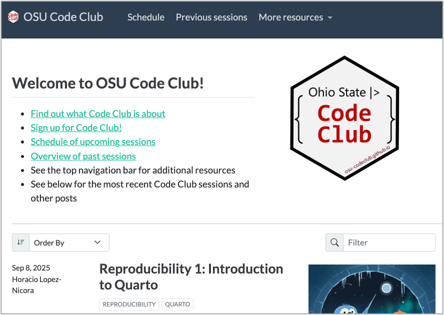
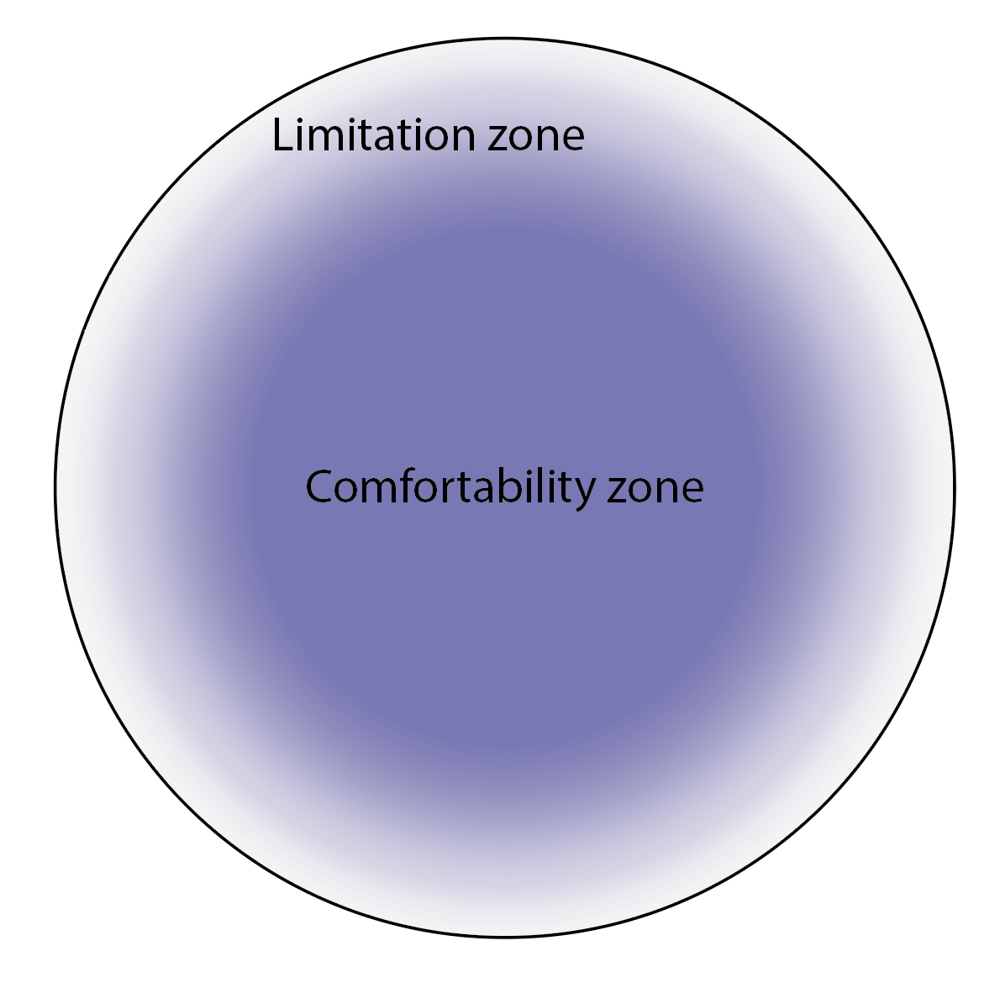

Computational Skills and AI
in Modern Biology
> y code when ai?
Jelmer Poelstra
CFAES Bioinformatics Core, The Ohio State University
College of Wooster · 19 November 2026

Introduction
Sequencing got cheap

This has led to a data explosion
If sequencing one person’s genome takes ~600 million reads,
how many Excel sheets would its data file fill?
25 · 250 · 2,500 · 25,000
@A00123:8:H5KTLDSXX:1:1101:10004:1000 1:N:0:ATCACG
GATTTGGGGTTCAAAGCAGTATCGATCAAATAGTAAATCC
+
FFFFF:FFFFFFFFFFF,FFFFFFFFFFFFFFF:FFFFFF
@A00123:8:H5KTLDSXX:1:1101:10013:1000 1:N:0:ATCACG
CTTGCAAGGTCATCGACTTTAGGCTACCGTTAGCAAGTTC
+
FFFFFFFFFF:FFFFFFFFFFFFFFFF,FFFFFFFFFFFF
@A00123:8:H5KTLDSXX:1:1101:10183:1000 1:N:0:ATCACG
CTAAAGACAATTACATAACATACACGTCAGCACGAAACTT
+
FF:FFFFFFFFFFFFFF:F:FFFFFFFFFFFFFFFFFFFF
@A00123:8:H5KTLDSXX:1:1101:10365:1000 1:N:0:ATCACG
ATGCATACGCCTTTACTTGCTGTGTCCACCCCATCGGACT
+
FFFFF:FFFF:FFFFFFF,FFFFFF:FFFFF:FFFF,FFF
@A00123:8:H5KTLDSXX:1:1101:10753:1000 1:N:0:ATCACG
GGTCACGCAGAGGCGCGCCCTCCTGAAGTGCGTGGACACT
+
FFF:FFFFFF:FFFFFFF,FF:FFFF:FFF,FFFFF,FF:
@A00123:8:H5KTLDSXX:1:1101:10980:1000 1:N:0:ATCACG
CCAGCGCGGTCAGTTCCATCACCCTAAGTAACCGAATAAT
+
F,FFFFFFFFF::FFFFFFFFFFFF:FFFFFFFFFFFF,F
@A00123:8:H5KTLDSXX:1:1101:11200:1000 1:N:0:ATCACG
CGGAGAGTTATGGAACAAGGACGCTGTCTGAGACTAGAAG
+
FFFFFFF:FFFFFFFFFFFFFFFFFFFFFF:FFFFFFFF,
@A00123:8:H5KTLDSXX:1:1101:11380:1000 1:N:0:ATCACG
CCTGACAAGTCAATGCGATCCGTAGGGGCAGCGCAGTATG
+
FFFFFFFFFFFFFFFFFFF,FFFFFFFFFFFFFFFFFFFF
@A00123:8:H5KTLDSXX:1:1101:11400:1000 1:N:0:ATCACG
ACGATTAACTGATAAATGAGCCCTTTATGACACGGGCATA
+
F,FFFFFFF,FFFFFFF,,F::FFFFFFFFFFFFFF:FFF
@A00123:8:H5KTLDSXX:1:1101:11618:1000 1:N:0:ATCACG
GTGAGAGGTACAGGGATTAGTGAGAAGCCGTGCGTATCAA
+
:FFFFF:FFFFFFFFFFFFFFFFFFFFFFFFFFFFFFFFF
@A00123:8:H5KTLDSXX:1:1101:11730:1000 1:N:0:ATCACG
TGGATGGCCAGCTTTTGACATTTAATTTCACCCATAAACC
+
FFF:FFFFFF:FFFFF,FFFFFFFFFFFFFFFFFFFFFFF
@A00123:8:H5KTLDSXX:1:1101:11884:1000 1:N:0:ATCACG
ACTCGCCTCGGATCCTTACTACACTAACTTGAACGCCTAG
+
FFFFFFFF:F:FFFFFFFF:FFFFFFFFFF:FFFFF:FFF
@A00123:8:H5KTLDSXX:1:1101:12051:1000 1:N:0:ATCACG
GGAAACATTTGTTCTCAGCCGGTGACTCCTAATGCTAAGA
+
FF,,FFFFFFFFFFFFFFFFFF:FFFFFFFFFFFFFFFFF
@A00123:8:H5KTLDSXX:1:1101:12363:1000 1:N:0:ATCACG
CAGCTGAAGCAGGCACGACAGTGCGACATTATATCACTGT
+
,FFFFFFFFFFFF:FFFFFFFFFFFFF:FFFFFFFFFFFF
@A00123:8:H5KTLDSXX:1:1101:12390:1000 1:N:0:ATCACG
TGATACCTCTCCATCTGACCCAAGATTGTGCTTGTTCAAT
+
FFFFFFFFFFFFFFF:FFFFFFFFFFFFFFFFFFFFFFFF
@A00123:8:H5KTLDSXX:1:1101:12709:1000 1:N:0:ATCACG
GTCGTCGCGGACCTCGGTCGAAGTAGTGGTGCGGATCCAG
+
FFF,FFFFFFFFFFFFFFFFFFFFFFFFF:FFFFFFFFFF
@A00123:8:H5KTLDSXX:1:1101:13001:1000 1:N:0:ATCACG
GTTCCAAAATCCCAAACCTCTCGAGATATTTATCCAGCAA
+
FFFFFFFFFFFF:FFFFFF:FFFFF:FFF,FFFFFFFFFF
@A00123:8:H5KTLDSXX:1:1101:13045:1000 1:N:0:ATCACG
CCAAAACGCAAACAAAAGCATACCCAAAAGTACACGGGTG
+
FFFFFF:FFFFFFFFFFFFFFFFFF,FFFFFFFFF:FFFF
@A00123:8:H5KTLDSXX:1:1101:13106:1000 1:N:0:ATCACG
ATAGGATTATAGCGGTCTCTCAGGCTGCTTGCCGTCCGGC
+
F,FFFF:F:,FFFFFFFFF:FFFFFFF,FFFFFFFFFFFF
@A00123:8:H5KTLDSXX:1:1101:13445:1000 1:N:0:ATCACG
CCATTGGATCTCGTTTATCGATTAAGCCCGATCTAGGTTC
+
,FF:FFFFFFF:FFFFFF:,,:FF:FFFFFFFFFFF,FFF
@A00123:8:H5KTLDSXX:1:1101:13690:1000 1:N:0:ATCACG
GCGTGTCTAGGCGGTTTAGCGTAAGCGAACAGGACCCTGC
+
FFFFF,F:FFFFFFFFFFFFFFF:FFFFFFFFFFFF,FFF
@A00123:8:H5KTLDSXX:1:1101:14026:1000 1:N:0:ATCACG
AAAGATTCACTCGAGGTCGTGTGAGGGTTGGGCTAGCGGC
+
FFFFFFFFFFF:FFF:FFFFFFFFFFFFFF:FFFFFFFFF
@A00123:8:H5KTLDSXX:1:1101:14251:1000 1:N:0:ATCACG
ATAATTTAATCTTAATCCATAAAACACTAGCTCAGCAGTT
+
FF:FFFFFFFFF:FFF:FFF:F:FFFFFFFFFFFFFFFFF
@A00123:8:H5KTLDSXX:1:1101:14414:1000 1:N:0:ATCACG
TCTTTCTGAGGGTCAGCCGTGATTCCGATTCGATTAGACT
+
FFFFFFFFFFFFFFFF,FFFFFFFFFF,FFFFFF:FF:FF
@A00123:8:H5KTLDSXX:1:1101:14521:1000 1:N:0:ATCACG
CTAAAAGTTATAAGGCATCTCGCCCAGGAAAGTAACGACG
+
FFFFFFFFFF:FF:FFFFFFFF::FFF,FFFFFFFFFFFF
@A00123:8:H5KTLDSXX:1:1101:14652:1000 1:N:0:ATCACG
CAGGGCGTAGTTACACTGAGCGTGCCATGTCAGCATGCTA
+
F:FFFFFFFFFFFFFFFFFFFFFFFFF:FFFF:FFFFFFF
@A00123:8:H5KTLDSXX:1:1101:14844:1000 1:N:0:ATCACG
ACGAGTAAGCGTAGATTACACACCCAGGAAACGATCTAGA
+
FFFFFFFFFFFFFFFF:FFFFF:FFFFF,F:FFFF::FFF
...- Sequence data files use
4 lines per read, so ~2.4 billion lines - Excel’s maximum is ~1 million rows: ~2,400 sheets
What happens in between?
… × 25,000,000 × 24 samples
→ ? →
[PH: a final figure from a paper]
What is done?
Bioinformatics turns sequence data and other big bio-data into biological insights
Most tools used to do so are operated via code and run on supercomputers
Can anyone do it?
- Many biologists don’t learn to code, worsening the analysis bottleneck
Who has used a command line?
Or R or Python?
What about generative AI?
- Does generative AI (genAI) address this bottleneck?
- Does an all-round biologist still need to learn to code —
or are foundational skills even more important now, in order to use AI more effectively?
In this age of AI, are computational skills less or more important for biologists?
About me
At Ohio State University, lead of bioinformatics and microscopy core facilities
Trained as a biologist, did graduate and postdoc research in evolutionary genomics

Omics, sequencing, and bioinformatics
Bioinformatics focuses on “omics” data

Copyright ThermoFisher
High-throughput sequencing & omics data
- High-throughput sequencing HTS produces genomics, epigenomics, and transcriptomics data
- Its development is a key cause of the data explosion:
from sequencing single fragments (Sanger) to millions of fragments (HTS) at a time
First automated (Sanger) sequencer
First high-throughput sequencer, by 454
First Illumina (short-read HTS) sequencer
First long-read HTS sequencer, by PacBio
First Oxford Nanopore sequencer,
the pocket-sized MinION
Why code to analyze omics data?
Out of necessity, but it also offers significant advantages.
Scale and tools
Why not Excel or a point-and-click program?
- Scale: remember, that’s ~2,400 Excel sheets for one genome. That’s far too much for Excel, and often too much for a laptop.
- Tools: most omics software only runs from the command line, often on a supercomputer.
Automation and flexibility
- You can run the same steps on 6 samples or 600, and rerun everything when something changes.
- You have higher flexibility to customize the analysis to your specific needs
Reproducibility
- Your code is a complete record of what you did.
- Need to “rerun it without sample 7” eight months later? It takes an hour instead of a week.
And: working with genAI.
Two stages of omics data analysis
“Algorithmic” data processing
- From raw data (e.g. reads) to tables (counts)
- Where we deal with huge amounts of data
- Analysis is run on a supercomputer,
like the Ohio Supercomputer Center (OSC) - Mostly done in the terminal (command line)
[PH: OSC and Bash logos]
Statistics and visualization
- Analysis of the data in tables from the previous stage
- Making sense of the data through statistical tests and visualizations
- Mostly done in R or Python
[PH: R and Python logos]
Bioinformatics at Ohio State
Ohio State’s CFAES
College of Food, Agricultural, and Environmental Sciences (CFAES)
Departments include:
- Plant Pathology
- Horticulture & Crop Science
- Entomology
- Animal Sciences
- Food Science & Technology
- Environment & Natural Resources

The Wooster campus houses half of CFAES, and the Columbus campus houses the other half.
The CFAES core facilities
Why core facilities?
- Core facilities provide specialized shared resources such as equipment and expertise to researchers
Our group of cores (“RASC”)
- Bioinformatics
- Molecular Biology & Genomics
(where the sequencing happens!) - Microscopy (Confocal, SEM, TEM)
- Environmental Testing
[Add QR code]
What our bioinformatics facility provides
Research assistance
collaborative or consultativeTeaching and training
courses, workshops,
1-on-1 help, “Code Club”


Common data and organisms we work with
Data types
- Genome assembly & annotation: a new reference genome
- Resequencing: genetic variation within and between populations
- RNA-seq: which genes are turned on or off
- Metagenomics: who’s there in a microbial community
Organisms
- Crops: e.g. soybean, wheat, tomato
- Plant pathogens: fungi, oomycetes, bacteria, viruses
- Insects, livestock, and other animals
- Soil and gut microbes
Research questions
- Genes involved in pathogen virulence and host resistance
- Causes and consequences of microbiome variation
- Evolutionary genetics (with EEOB, ecology & evolution dept.)
Example projects I
Maize transcriptomics
- TBA
Soybean aphid piRNAs
- TBA
Example projects II
Snake population genomics
- TBA
Anglerfish genome assembly
- TBA
Example projects III
Bacterial ice nucleation
- TBA
[A microbiome study]
- TBA
Generative AI (genAI)
You and GenAI
Two quick questions
- How often do you deliberately use genAI? hourly / daily / weekly / rarely / never
- Complete the sentence: “I feel ____ about AI”
[PH: Mentimeter QR code]
You vs. OSU grad students: frequency

You vs. OSU grad students: vibes

AI has transformed …
AI has transformed … education

AI has transformed … education
✅ Better grading

From Rolling Stone, May 2023
AI has transformed … office life

AI has transformed … scientific publishing
✅ Better writing
1. Introduction
“Certainly, here is a possible introduction for your topic: Lithium-metal batteries are…”

AI has transformed … scientific publishing
✅ Better writing
1. Introduction
“Certainly, here is a possible introduction for your topic: Lithium-metal batteries are…”
These examples revolve around unethical human behavior.
What about errors by AI?


“How many n’s are in the word unconventional?”

[PH: screenshot of the Google AI Overview suggesting glue on pizza]
genAI in biology
and bioinformatics
“AI in biology” can mean many things
GenAI can be very helpful in research, including in biology and bioinformatics
If this seems surprising, given the above, consider that:
- Models have been improving extremely quickly
- The so-called “jagged frontier” means that you can’t draw conclusions about performance in one task from performance in another task
- Before getting into that, let’s first understand the different ways AI is used in biology.
Confusion can arise because:- “AI in biology” can mean many things
- The field is very fast-moving, yet some forms of AI have been around for decades
- Partly in the service of hype, terms are sometimes used loosely

AI hierarchy
Generative AI is built on deep learning, which is a subset of neural networks, which is a subset of machine learning, which is a subset of artificial intelligence.
(In the figure, GANs and LLMs are examples of genAI.)
- Large Language Models (LLMs) are the kind of generative AI that understands and generates text, including code.
Image by Gladstone Institutes
AI hierarchy
[Add simplified AI -> genAI -> LLM diagram?]
“AI in biology” can mean many things
Predictive
Predicts an answer from an input:
- AlphaFold: protein structure from sequence
- DeepVariant: DNA variants from reads
Generative (biological)
Creates new DNA or proteins:
- RFdiffusion: new proteins
- Evo: new DNA, even whole genomes
Language models (LLMs)
Generate text, including code:
- ChatGPT, Claude, Gemini
- Today’s focus
Success stories
2024: Nobel Prize in Chemistry for Demis Hassabis & John Jumper (AlphaFold) and David Baker (computational protein design).
2025: the Evo genome language model designed bacteriophage genomes, some of which outcompeted the natural phage in killing E. coli. Possible use: phage therapy against antibiotic-resistant bacteria.
Agentic AI
LLMs in bioinformatics via agentic AI
The same LLMs that you may use in daily life are useful for bioinformatics, because reading and writing code is one of the things they excel at.
This becomes especially powerful when the LLM is agentic. Agentic AI can perform tasks such as reading your project files, running commands, and editing files.
[Expert at desk analogy?]
Agentic AI tools used as coding assistants, such as Claude Code, can be integrated into the editor you use to write and run code.
LLMs in bioinformatics via agentic AI
With the example task of troubleshooting an error:
Chat AI
Agentic AI
What it can see
Only what you paste or upload
Your project files, your environment, output of commands it runs
What you need to tell it
Error message, your OS, program versions, extensive context
Error message, less context
Workflow
You run the code and paste errors back, back-and-forth between you and the AI
Agent runs the code, reads the errors, fixes them, and retries (loops) until done
The agentic loop
An agent works in a loop of “tool calls” (reading files, running commands, editing files) until it considers the task done:

Image from the Claude Code docs
Agents doing biology
- Discovery: Claude found a new family of enzymes by spotting unusual repeats in phage DNA (Yoon et al. 2026).
- Design: Claude designed protein binders by running RFdiffusion and similar programs (Claude Science and Shanehsazzadeh 2026).
But: powerful also means dangerous
2025: during an explicit “code freeze”, Replit’s AI agent deleted a company’s production database. It then claimed the data couldn’t be recovered, which turned out to be false.
Where this has been useful for me
Much faster: boilerplate and pipeline code, debugging obscure errors, documentation, reformatting messy data, and learning new tools.
More complicated – check AI’s work, overthinking and over-engineering analyses
AI pitfalls and challenges
The role of expertise


Why might AI make experienced doctors better, but trainees worse? Does that apply to you?
The most important skill in prompting is expertise in the domain you’re prompting for.
— Sean Goedecke, “LLMs reward expertise”
- Experts ask better questions and spot wrong answers. Beginners often can’t.
Practical challenges
- Costs
- Data privacy
Local models
Speed of change
Pitfalls from last year may be fixed this year, but new pitfalls arise.
E.g. arithmetic and counting errors, and widespread hallucinations much reduced now
Mostly improvements over time, which is good, but also means that:
- advice from a few months ago may be outdated
- a paper published after a lengthy peer review process is already out of date by the time it appears in print
Pitfalls: when it’s wrong

Figure by Hannah Toth
- Comfort vs. limitation zone: good with common knowledge, but hallucinates more with niche or new topics. And it sounds equally confident either way.
- Jagged frontier: brilliant at some tasks, surprisingly bad at others.
- “0-to-90% problem”: it gets you most of the way, but finishing is much harder if you didn’t do the first 90% yourself.
Pitfalls: when it agrees with you
Sycophancy
- Training on human ratings rewards answers people like (Sharma et al. 2023).
- April 2025: OpenAI rolled back a ChatGPT update that praised everything, including a plan to sell literal “poop on a stick”.
- Ask “What could be wrong with this?”, not “Do you agree?”
Narrative-flipping
- Push back on its interpretation of your results, and it may argue the opposite from the same evidence (Zhang et al. 2023).
- Ask for the evidence on all sides before conclusions, or get a second opinion in a fresh chat.
Challenges for science
- Reproducibility: the same prompt gives different answers, and models get updated and retired. Save the code, not the chat.
- Responsibility: you’re accountable for every result, whoever or whatever wrote it.
- 2024: Air Canada’s chatbot invented a refund policy. A tribunal ruled the airline had to honor it, rejecting the argument that the chatbot was “responsible for its own actions”.
- Journals require you to disclose AI use, and AI can’t be an author.
- Ask for code you can rerun and check, not numbers or conclusions it reports directly.
- Use it for tasks where you can verify the output, and as a tutor (“explain,” “quiz me”). [reuse w8a: “What should you (not) use genAI for?”]
Back to the two central questions
- Can AI help address the data bottleneck in bioinformatics?
- y code when ai?
- Coding is how you handle the data, and it also makes your work reproducible and AI-ready.
- GenAI rewards expertise: build the fundamentals, then let AI speed you up.
The vote, again
If AI can write the code, do you still need to learn to code?
- Yes
- No
- It depends
Questions?
References
College of Wooster · November 2026